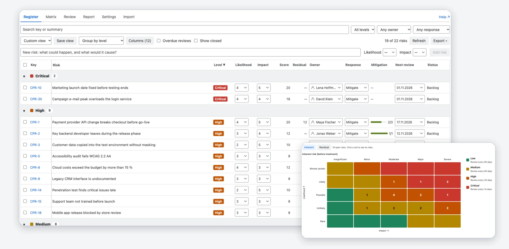
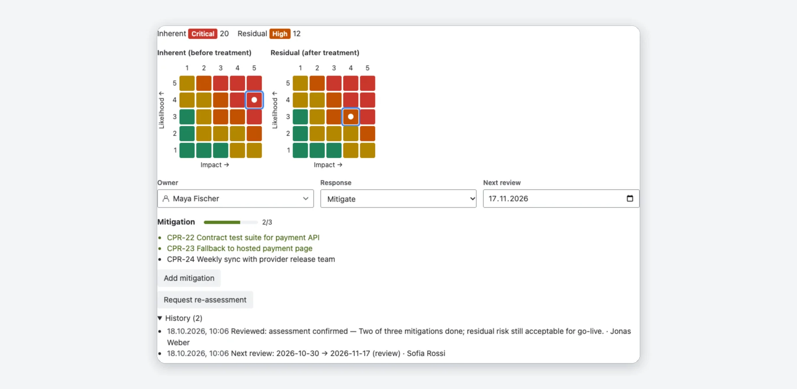
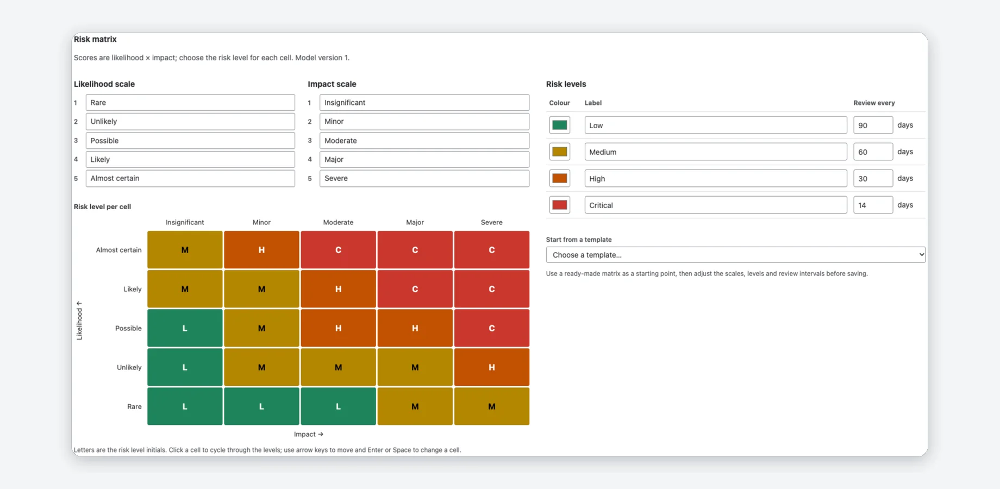
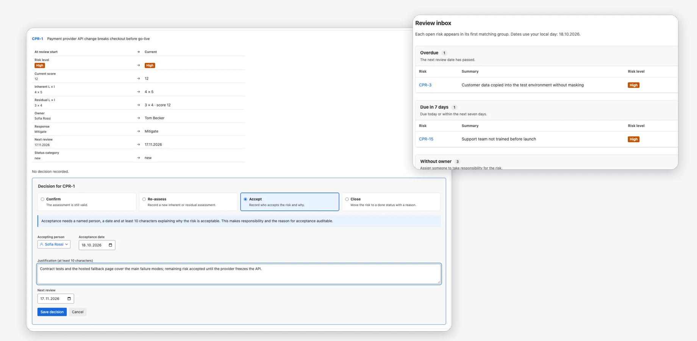
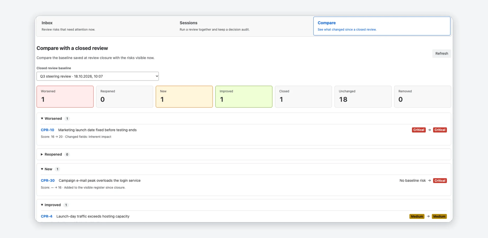
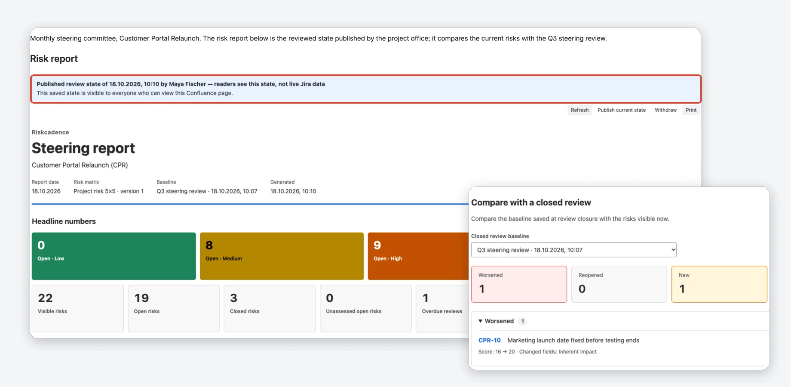
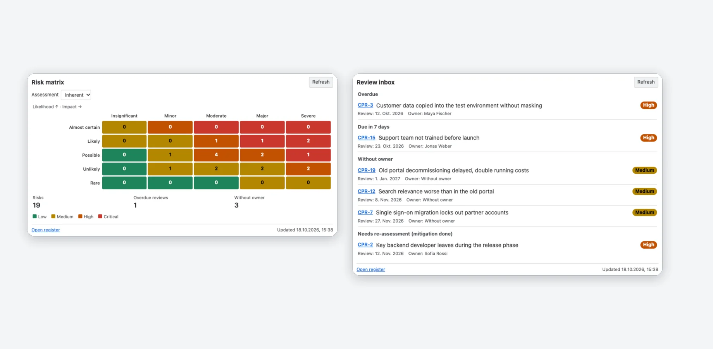
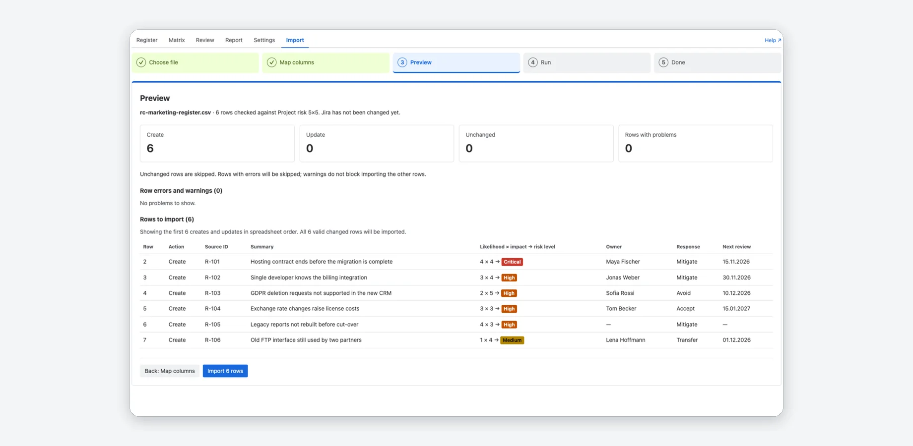

The risk register that lives in Jira
Every risk is a Jira work item. A configurable risk matrix, a review inbox, review sessions with an audit trail and a steering report for your committee, in Jira and Confluence. The heat map and the review inbox also run on Jira dashboards.
Free for Jira sites with up to 10 users. Larger sites start with a free trial.
What you get
Screenshots from a real Jira site with sample data.

A risk register in Jira
Every risk is a Jira work item of the type Risk. The register lists them with score, level, owner, response, mitigation progress and next review, and you change most of it in place.
- Search, filters, grouping and columns; save a view and share it with your team.
- Bulk edit, and export of the current view as CSV or XLSX.
- A heat map shows where the open risks sit; click a cell to see its risks.

Assessment on every risk
The “Risk assessment” panel on each risk shows the inherent and the residual risk on the matrix, with owner, response and next review.
- Mitigations are Jira work items linked with “is mitigated by”; the panel shows how many are done.
- “Add mitigation” creates a work item or links an existing one, right from the panel.
- “Request re-assessment” sets the next review to today and mentions the owner in a Jira comment.
- The history lists who changed what, and when.

Your own risk matrix
Start from a 5×5, 4×4 or 3×3 template and make it yours: names for the steps, colours and a level for every cell, not just score bands.
- A review interval per level prefills the next review date.
- Saving creates a new version; earlier reviews keep the one they were made with.
- Project admins change the matrix; everyone else sees it read-only.

Review inbox and sessions
The inbox shows what needs attention: overdue reviews, risks due within seven days, risks without an owner and risks that need a re-assessment. A review session walks your team through the register.
- Confirm, re-assess, accept or close each risk, with a justification that stays in the audit.
- Accepting a risk needs a named person, a date and at least 10 characters of justification.
- Closing a session freezes the state as a baseline.

Compare with the last review
Pick a closed review as the baseline and see what changed since: new, worsened, improved, closed, reopened and removed risks.
- Each change shows the score before and after and which fields changed.
- Unchanged risks are counted, not listed.
- The same comparison feeds the steering report.

A steering report for your committee
Headline numbers, an open-risk heat map, top risks, changes since a baseline, mitigations and open decisions, in Jira, across projects and as a Confluence macro.
- In Confluence, a page editor publishes a dated review state that readers see without Jira access; it can be withdrawn at any time.
- A live report shows every reader what their own Jira permissions allow.
- The risk trend shows the open risks per level at the last six closed reviews and now.
- Print it or save it as PDF; the Confluence page exports to PDF and Word.

Matrix and inbox on dashboards
Add the risk matrix or the review inbox for one or more projects to a Jira dashboard.
- Show the inherent or the residual risk on the matrix.
- Click a cell to open the register filtered to its risks.
- The inbox groups overdue reviews, risks due in 7 days, risks without an owner and risks that need a re-assessment.

Import your existing register
Bring in a register from CSV or XLSX: map the columns, check the preview, import.
- Column mapping recognises English and German column names.
- A source ID makes a re-import update risks instead of duplicating them.
- The preview shows errors and warnings before anything changes in Jira.
Jira alone vs. with Riskcadence
| Jira alone | With Riskcadence | |
|---|---|---|
| Assessing a risk | Custom fields that you create and keep consistent by hand | Likelihood and impact on your own matrix, with score and level calculated for you |
| Knowing what to review | A saved filter that you build and check yourself | A review inbox: overdue, due in 7 days, without an owner, needs re-assessment |
| Recording a decision | The work item history shows field changes, not who accepted a risk and why | Review sessions keep each decision with the person, the date and the justification |
| Reporting to a committee | Counts on a dashboard, or a spreadsheet that someone updates by hand | A steering report with heat map, top risks and changes since the last review |
Compared with Jira Cloud and Confluence Cloud without apps.
Free for small sites, per user above
Free for up to 10 users
No cost on Jira sites with up to 10 users, with every feature.
- Risk register, matrix, issue panel and import
- Review inbox, sessions and comparison
- Steering report in Jira and in Confluence
- Dashboard matrix and review inbox
11 users and more
Larger sites start with a free trial; after the trial it is priced per user, with graduated prices per user and month in USD:
- 11–100 users: 0.79
- 101–250 users: 0.59
- 251–1,000 users: 0.39
- 1,001–2,500 users: 0.29
Billing and the trial are handled by Atlassian through the Marketplace.
Running in three steps
Install
Once the app is live on the Atlassian Marketplace, a Jira admin installs it on the Jira site.
Set up a project
Open Riskcadence in a project and click Set up project. In company-managed projects a Jira admin does it in one click; in team-managed projects a project admin follows a short checklist.
Add risks
Add risks in the register, import a spreadsheet or add six example risks. Then open the review inbox and the steering report.
How do I set up a risk register in Jira?
Can I use my own risk matrix?
Does it work in team-managed projects?
How do reviews work?
Can people without Jira access read the steering report?
Can I see how risks changed over time?
Does any data leave Atlassian?
Is it free?
Your risk register, reviews and reports in one place
Free for Jira sites with up to 10 users. Larger sites start with a free trial.
Atlassian, Jira and Confluence are trademarks of Atlassian. Riskcadence is an independent app by Janek Behrens and is not made or endorsed by Atlassian; the product names only say which products the app works with.